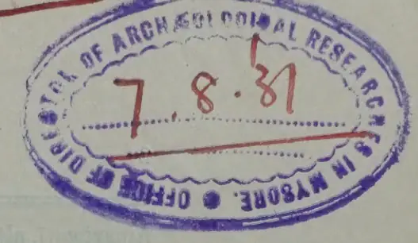

Prakrit Inscriptions from a Buddhist site at Nagarjunikonda
Reading this page
p. 23 is the page number printed in the volume; PDF 391 is that page's place in the scanned PDF, the page to open in the source scan. The badge at the bottom right shows the page you are reading as you scroll: click it to show printed or PDF numbers, or both, and to jump to a page. ↑ Top takes you back to the start.
Footnotes are numbered through the article and gathered at its end: click a number in the text to read its note in place, and ↩ in the notes to come back. Plates stand where the volume binds them, at the end of the paragraph they interrupt; All plates shows them together.
The article's opening page is not in this scan: its title and by-line come from the volume's contents.

EPIGRAPHIA INDICA.
Ac No. 1321(a)
VOLUME XX.
1.—PRAKRIT INSCRIPTIONS FROM A BUDDHIST SITE AT NAGARJUNIKONDA.
BY PROFESSOR J. PH. VOGEL, PH. D., LEIDEN.
In March 1926 Mr. A. R. Sarasvati, Telugu Assistant in the office of the Assistant Archaeological Superintendent for Epigraphy at Madras, made a discovery of great interest at the hill of Nāgārjunikonḍa which belongs to the Palnāḍ taluk of the Gunṭṭir district of the Madras Presidency.1 The hill, which is described as a big flat-topped hill some 200 acres in extent, overhangs the right bank of the river Kistna or Kṛishṇā, the Kaṇṇapeṇṇā or Kaṇṇavaṇṇā (Skt. Krishṇavarṇā) of Pali literature, at a distance of some 15 miles from Mācherla and on the border of the Nizam's Dominions. The top of the hill shows traces of fortifications, now in ruins. The find of a Buddhist sculpture led to the discovery of three vast mounds of large bricks in different parts of the valley, each, apparently, marking the site of a stūpa. In the vicinity of these mounds marble pillars were found, some of them standing erect in rows. Several more were reported to lie scattered in the neighbouring villages and on the other side of the river. Among the pillars left on the site there were three, one on each mound, bearing inscriptions in Prakrit and in Brāhmī characters.
At the request of Dr. Hirānanda Śāstrī, Government Epigraphist, I undertook to edit the inscriptions in the Epigraphia Indica. A set of excellent estampages prepared under instructions from that officer, reached me in September 1926; but it was not until the end of that year that I could find the necessary leisure to decipher and study them. Early in March 1927, Dr. Hirānanda Śāstrī informed me that trial excavations carried out on the site of Nāgārjunikonḍa by Mr. Hamid Kuraishi, then officiating as Superintendent of Archæology in the Southern Circle, had yielded no less than eighteen more inscriptions and that their estampages would be sent to my address, in case I should be willing to edit them. I gladly consented to undertake this laborious but attractive task. As, however, there was a likelihood of the recently discovered inscriptions being of some help in elucidating doubtful points in those found previously, I suggested that the epigraphical finds of Nāgārjunikonḍa might be best dealt with in one article. Dr. Hirānanda Śāstrī accepted this proposal and in October 1927 supplied me with a complete set of estampages admirably executed.
During the cold season of 1927-28 the excavations at Nāgārjunikonḍa were continued under the supervision of Mr. A. H. Longhurst, Superintendent of the Archæological Survey, Southern Circle. These explorations have resulted in the discovery of a number of very remarkable Buddhist sculptures, some of them bearing inscriptions. The style which they exhibit is clearly that of